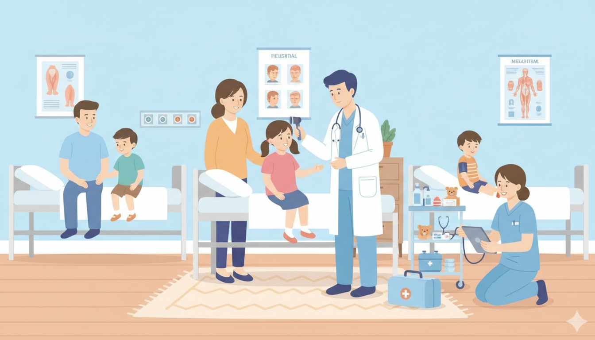
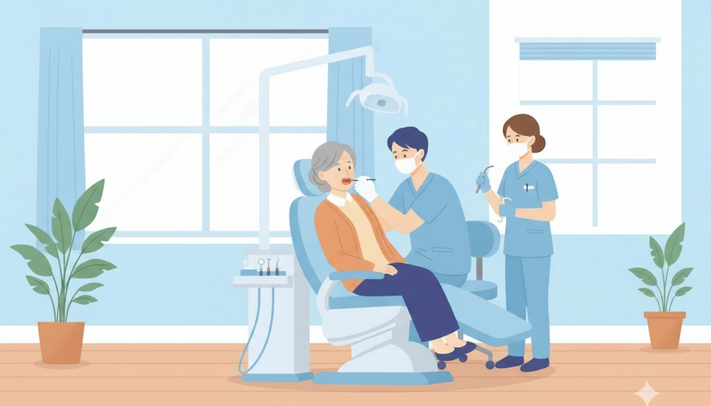

01
内科（小児科）
Internal Medicine / Pediatrics

Emergency Care
夜間や休日の診療を行っています。内科（小児科）・外科・歯科の応急処置に対応し、必要に応じて高度医療機関への紹介も迅速に行います。
Medical Treatment
| 診療時間 | 月 | 火 | 水 | 木 | 金 | 土 | 日・祝 / 年末年始 | |
|---|---|---|---|---|---|---|---|---|
| 内科（小児科） | 10:00~17:00 | ○ | ○ | |||||
| 20:00~23:00 | ○ | ○ | ○ | ○ | ○ | ○ | ○ | |
| 外科 | 10:00~17:00 | ○ | ○ | |||||
| 20:00~23:00 | ○ | ○ | ○ | ○ | ○ | ○ | ○ | |
| 歯科 | 10:00~17:00 | ○ | ○ | |||||
※診療時間の終了、15分前までにお入り下さいますようお願いします。
※年末年始：12月29日〜1月3日
発熱されて直ぐに来られても検査結果が陰性になる可能性があります。検査ご希望の方は、発熱から12時間以上経過してからお越し頂くと陽性が検出しやすく正確な検査結果が得られます。
・マイナンバーカードまたは資格確認証
・公費医療証（お持ちの方のみ）
・お薬手帳
※お忘れの場合は、自費扱いとなり後日、返金となります。
Medical Departments
マイナンバーカードまたは
健康保険証・医療証を
必ずご持参ください。
服用中のお薬がある場合は
お薬手帳とともに
ご持参ください。
当診療は応急処置です。
翌日はかかりつけ医療機関にて
改めて受診してください。
Internal Medicine / Pediatrics

Surgery
Dentistry
